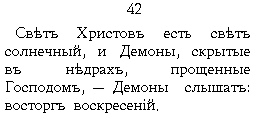
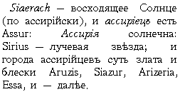
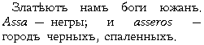
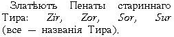
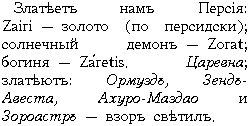
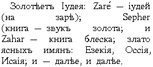
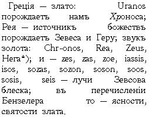
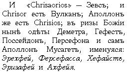
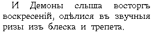

Glossolalia (Section 42)
GLOSSOLALIA

Christ's light is the sun's light; and the Demons, concealed in the nether world, are pardoned by the Lord, -- the Demons hear: the ecstasy of resurrections.
hellish lair.

Shiraz is -- the rising of the Sun (in Assyrian); and an Assyrian is Assur: Assyria is sunny: Sirius is -- a lucent star; and the cities of the Assyrians are of gold and gleaming: Arouzis, Siazour, Ariseria, Essa; and -- so on.


The Penates of ancient Tyre glitter: Zir, Zor, Sor, Sur (all are names for Tyre).

Persia glitters golden at us: Zairi is -- gold (in Persian); the sun demon is -- Zorat; the goddess is -- Zaretis: the Tsarevna; these glitter golden: Ormazd, Zend-Avesta, Ahura-Mazda and Zoroaster -- the gaze of luminaries/heavenly bodies.

Judea glitters golden: Zare -- a Judean (at dawn) [na zare]; Sepher (the book is -- the sound of gold); and Zahar is -- the book of gleaming; gold of clear names: Ezekiel, Hosea Isaiah; and -- so forth, and so forth.

Greece is -- gold: Uranos generates Chronos for us; Rhea -- the source of the deities gives birth to Zeus and Hera; the sound of gold: Chr-onos, Rhea, Zeus, Hera;* and -- Zes, Zas, Zoe, Iassis, Isos, Sozas, Sozon, Soos, Sosis, Seis, are -- the rays from Zeus' gleam; in Benseler's enumeration these are -- clarity, the sanctity of gold.

And "Chrysaor" is -- Zeus; and Chrysor is Vulcan; Apollo is Chrysios; today in the rizas of God are clothed Demeter, Hephaestus, Poseidon, Persephone, and Apollo Musagetes himself, they are named: Erekhfej, Phersephassa, Khefaist, Erizafej, and Akhfeia.

And the Demons hearing the ecstasy of resurrections, clothed themselves in resounding rizas of gleaming and trembling.
*) Cf. the reference work of Benseler.